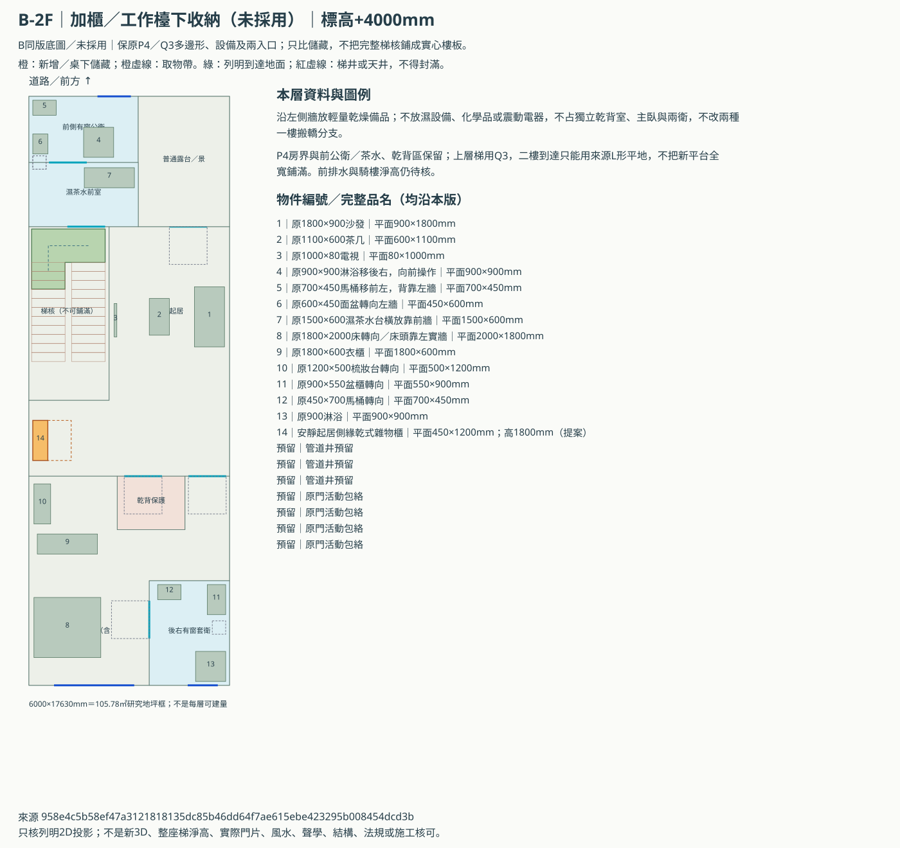
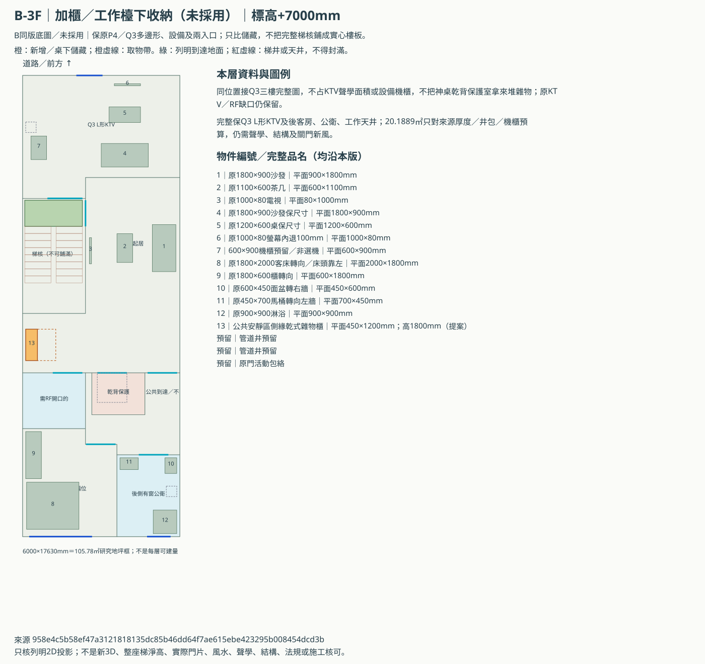
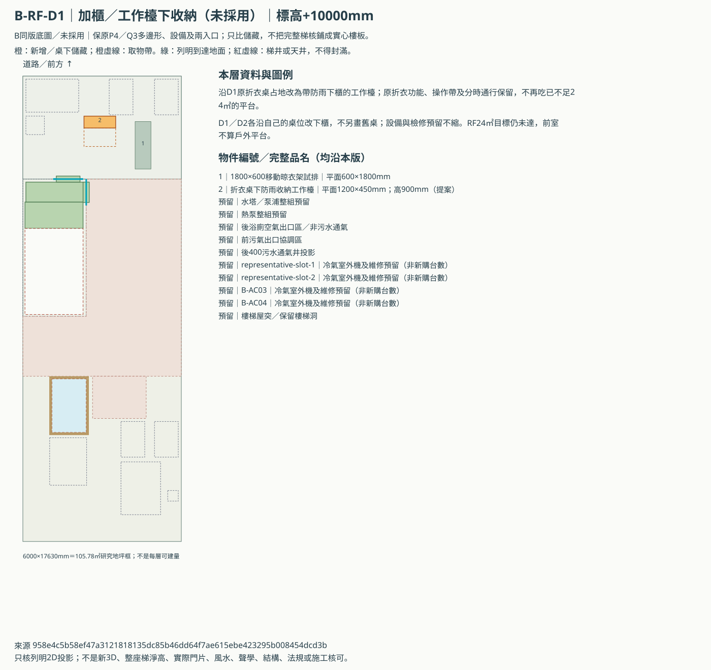
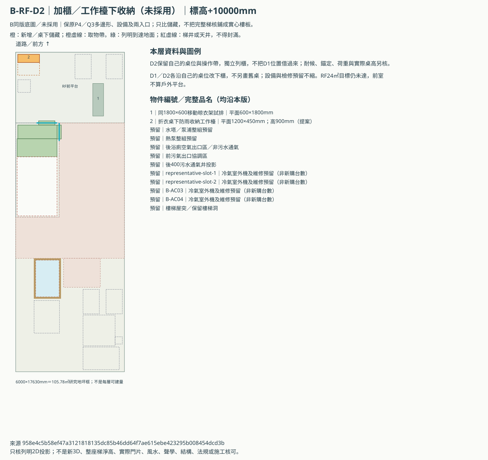

B上層同版底圖與逐層收納
P4二樓、Q3三樓及兩個RF版本的獨立同版資料。後門搬轎預設／前門備案均保留，未覆寫原ABC或已驗收3D；尚未採用。
先看上下層樓梯／平台／梯井接口，再比下面各層原配置與加櫃。兩個RF方案互斥，不把面積、設備或櫃體相加。原目標RF24㎡仍有缺口。

這輪完成的是同版底圖及未來3D輸入；沒有產生新3D或啟動瀏覽器。原有A／C比較的passed不套到本批。
B-2F｜安靜起居側緣乾式雜物櫃
沿左側牆放輕量乾燥備品；不放濕設備、化學品或震動電器，不占獨立乾背室、主臥與兩衛，不改兩種一樓搬轎分支。



B-3F｜公共安靜區側緣乾式雜物櫃
同位置接Q3三樓完整圖，不占KTV聲學面積或設備機櫃，不把神桌乾背保護室拿來堆雜物；原KTV／RF缺口仍保留。



B-RF-D1｜折衣桌下防雨收納工作檯
沿D1原折衣桌占地改為帶防雨下櫃的工作檯；原折衣功能、操作帶及分時通行保留，不再吃已不足24㎡的平台。



B-RF-D2｜折衣桌下防雨收納工作檯
D2保留自己的桌位與操作帶，獨立列櫃，不把D1位置借過來；耐候、錨定、荷重與實際桌高另核。



兩個一樓入口，各保留三種使用狀態
| 入口 | 狀態 | 保留方式 |
|---|---|---|
| b-rear-split | daily／ritual／carry | 原floor-1資料與hash逐項留在review.json；本批不更動一樓格局或搬運路線 |
| b-front-split | daily／ritual／carry | 原floor-1資料與hash逐項留在review.json；本批不更動一樓格局或搬運路線 |
沒有因加櫃而解掉的問題
| 項目 | 本輪狀態 |
|---|---|
| 地坪／可建量 | 6000×17630mm＝105.78㎡研究框；約32地坪不代表每層可建量 |
| Q3 KTV | 20.1889㎡是指定厚度與機櫃預算；聲學、樓板、設備與關門通風待核 |
| RF24㎡ | 未扣設備的樂觀上界21.83945㎡，仍少2.16055㎡；未接受縮目標 |
| P4排水 | 完整支管、偏移、1F梯核落水與騎樓淨高未解，不因同版合圖視為完成 |
| 梯／門／屋突 | 新L形到達與RF平台／前室是待核條件，沒有整段淨高、結構、防火、搬運或法規核可 |